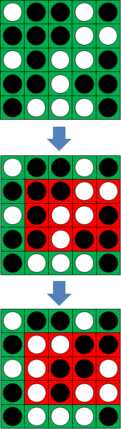

Project Euler 459
Project Euler 459
题目
Flipping game
The flipping game is a two player game played on a \(N\) by \(N\) square board.
Each square contains a disk with one side white and one side black.
The game starts with all disks showing their white side.
A turn consists of flipping all disks in a rectangle with the following properties:
the upper right corner of the rectangle contains a white disk
the rectangle width is a perfect square \((1, 4, 9, 16, \dots)\)
the rectangle height is a triangular number \((1, 3, 6, 10, \dots)\)

Players alternate turns. A player wins by turning the grid all black.
Let \(W(N)\) be the number of winning moves for the first player on a \(N\) by \(N\) board with all disks white, assuming perfect play.
\(W(1) = 1, W(2) = 0, W(5) = 8\) and \(W(10^2) = 31395\).
For \(N=5\), the first player’s eight winning first moves are:

Find \(W(10^6)\).
解决方案
可见这是一个有限、无偏、正常玩法博弈，因此可以使用 SG 定理。记 \(B(x,y)\) 为仅 \((x,y)\) 为白，其余全黑的局面，并记其 SG 值为 \(g(x,y)\)。
把任意局面 \(S\) 理解为若干个单白格局面 \(B(x,y)\) 的组合：哪些格子为白，就包含哪些 \(B(x,y)\)。由于组合局面的 SG 值等于各子局面 SG 值的异或和，故有
\[ \operatorname{SG}(S)=\bigoplus_{(x,y)\in S} g(x,y). \]
因此，执行一次翻转一个矩形的操作，等价于把该矩形内所有格子的 \(g(x,y)\) 各自异或一次，从而得到新局面的 SG 值。
观察合法操作：选择右上角白格 \((x,y)\) 后，允许翻转的矩形集合为\([x-w+1,x]\times[y-h+1,y],\) 其中 \(w\) 取平方数集合 \(\mathcal S=\{i^2\mid i\in \mathbb{Z}_{>0}\}\)，\(h\) 取三角数集合 \(\mathcal T=\left\{\dfrac{i(i+1)}{2} \mid i\in \mathbb{Z}_{>0}\right\}\)。
注意这一步的结构是横向区间与纵向区间的笛卡尔积：先选一个横向长度 \(w\) 的区间，再选一个纵向长度 \(h\) 的区间，矩形就是两者的乘积。因此我们引入两个一维游戏：
- 横向游戏 \(H_N\)：长度为 \(N\) 的一排棋子（位置 \(1,\dots,N\)），一次操作选一个白位置 \(x\) 作为右端点，选 \(w\in\mathcal S\) 且 \(w\le x\)，翻转区间 \([x-w+1,x]\)；
- 纵向游戏 \(V_N\)：同样是一排棋子（位置 \(1,\dots,N\)），一次操作选白位置 \(y\) 作为上端点，选 \(h\in\mathcal T\) 且 \(h\le y\)，翻转区间 \([y-h+1,y]\)。
二维操作的结构可以理解为两个一维规则的笛卡尔积：每一步先在横向选择一个合法区间，再在纵向选择一个合法区间，随后翻转它们的直积矩形。
因此只需先研究两个一维边界游戏。设 \(h(x)\) 为横向一维游戏中仅位置 \(x\) 为白的 SG 值，\(v(y)\) 为纵向一维游戏中仅位置 \(y\) 为白的 SG 值。再引入 nimber 乘法 \(\otimes\)，则二维单白格局面 \(B(x,y)\) 的 SG 值满足\(g(x,y)=h(x)\otimes v(y).\)其中\(\otimes\)的含义为：\(\alpha \otimes \beta = \operatorname{mex}\{ \alpha' \otimes \beta \oplus \alpha \otimes \beta' \oplus \alpha' \otimes \beta' : \alpha' < \alpha,\beta' < \beta \}.\)
到此为止，二维问题被拆成：求出一维序列 \(h(1,\dots,N)\)（平方长度规则）；求出一维序列 \(v(1,\dots,N)\)（三角长度规则）；最后用 \(\otimes\) 将它们组合，并做计数。
不失一般性，下面只推横向平方规则，纵向完全同理，只需把平方数换成三角数。
令 \(H(x)\) 表示一维横向游戏中仅位置 \(x\) 白，其余黑的局面，定义\(h(x)=\operatorname{SG}(H(x)).\)考虑从 \(H(x)\) 出发的一步：必须以该白子 \(x\) 为右端点，选一个平方长度 \(w\in\mathcal S\) 且 \(w\le x\)，翻转区间 \([x-w+1,x]\)。翻转后：位置 \(x\) 被翻成黑；位置 \(x-w+1,\dots,x-1\) 被翻转：原本是黑，现在变白。
于是新局面等价于这些新白子各自对应的单白格子游戏的异或和，其 SG 值为\(h(x-1)\oplus h(x-2)\oplus\cdots\oplus h(x-w+1).\)因此从 \(H(x)\) 可达的 SG 值集合为\(\displaystyle\left\{\bigoplus_{t=x-w+1}^{x-1} h(t)\middle|w\in\mathcal S,w\le x\right\}\cup\{0\},\)
其中 \(0\) 对应若 \(w=1\)，区间只有 \([x,x]\)，翻完后变成空局面。根据 SG 定义，
\[h(x)=\operatorname{mex}\left(\left\{\bigoplus_{t=x-w+1}^{x-1} h(t)\mid w\in\mathcal S,w\le x\right\}\cup\{0\}\right).\]
为了把区间异或在 \(O(1)\) 求出，引入前缀异或\(\displaystyle P_H(x)=\bigoplus_{i=1}^x h(i), P_H(0)=0.\)则\(\displaystyle\bigoplus_{t=x-w+1}^{x-1} h(t)=P_H(x-1)\oplus P_H(x-w).\)从而递推式可写为\(h(x)=\operatorname{mex}\left(\left\{P_H(x-1)\oplus P_H(x-w)\mid w\in\mathcal S,w\le x\right\}\cup{0}\right),\)并且更新\(P_H(x)=P_H(x-1)\oplus h(x).\)
纵向序列 \(v(y)\) 同理，设\(\displaystyle P_V(y)=\bigoplus_{j=1}^yv(j), P_V(0)=0,\)则
\[ \begin{aligned} v(y)&=\operatorname{mex}\left(\left\{P_V(y-1)\oplus P_V(y-h)\mid h\in\mathcal T,h\le y\right\}\cup\{0\}\right),\\ P_V(y)&=P_V(y-1)\oplus v(y). \end{aligned} \]
可见，全白棋盘\(W\)的 SG 值为所有单白格值的异或为：
\[ \operatorname{SG}(W) =\bigoplus_{x=1}^N\bigoplus_{y=1}^N g(x,y) =\bigoplus_{x=1}^N\bigoplus_{y=1}^N \bigl(h(x)\otimes v(y)\bigr) =\left(\bigoplus_{x=1}^N h(x)\right)\otimes\left(\bigoplus_{y=1}^N v(y)\right) \]
可见，最后一步是利用了 nimber 乘法对异或的分配律。所以设\(\displaystyle A=P_H(N)=\bigoplus_{x=1}^N h(x), B=P_V(N)=\bigoplus_{y=1}^N v(y),\)则初态 SG 为\(T=A\otimes B.\)
一次翻转矩形\(R=[x-w+1,x]\times[y-h+1,y]\)对 SG 的影响就是异或上该矩形内所有 \(g(i,j)\)。矩形的值定义为 \[ \operatorname{val}(R)=\bigoplus_{i=x-w+1}^{x}\bigoplus_{j=y-h+1}^{y} g(i,j). \]
由 \(g(i,j)=h(i)\otimes v(j)\) 以及分配律，有\(\displaystyle\operatorname{val}(R)=\left(\bigoplus_{i=x-w+1}^{x} h(i)\right)\otimes\left(\bigoplus_{j=y-h+1}^{y} v(j)\right).\)
再用前缀异或把两段区间异或化为 \(O(1)\) 形式：\(\displaystyle\bigoplus_{i=x-w+1}^{x} h(i)=P_H(x)\oplus P_H(x-w),\bigoplus_{j=y-h+1}^{y} v(j)=P_V(y)\oplus P_V(y-h).\)因此\(\operatorname{val}(R)=\bigl(P_H(x)\oplus P_H(x-w)\bigr)\otimes\bigl(P_V(y)\oplus P_V(y-h)\bigr).\)
当前局面 SG 值为 \(T\)。翻转矩形 \(R\) 后，新局面 SG 值为\(T\oplus \operatorname{val}(R).\)先手一步走到必败局面当且仅当新 SG 为 \(0\)，即\(T\oplus \operatorname{val}(R)=0\Longleftrightarrow\operatorname{val}(R)=T.\)
因此 \(W(N)\) 的定义等价于：统计所有合法首步矩形 \(R\)，其矩形值 \(\operatorname{val}(R)\) 等于 \(T\) 的个数。
注意每个合法矩形由一对合法区间决定：横向：选择右端点 \(x\) 与平方长度 \(w\)；纵向：选择上端点 \(y\) 与三角长度 \(h\)。令横向区间异或值\(a=P_H(x)\oplus P_H(x-w),\)纵向区间异或值\(b=P_V(y)\oplus P_V(y-h),\)则矩形值为\(\operatorname{val}(R)=a\otimes b.\)
于是只需要统计两类一维区间值的出现次数：对每个可能的 \(a\)，令 \(C_H[a]\) 为所有合法 \((x,w)\) 产生该 \(a\) 的次数；对每个可能的 \(b\)，令 \(C_V[b]\) 为所有合法 \((y,h)\) 产生该 \(b\) 的次数。那么
\[ W(N)=\sum_{a}\sum_{b}\mathbb{1}\{a\otimes b=T\}\cdot C_H[a]\cdot C_V[b], \]
至此，我们用 mex 递推得到 \(h(1,\dots,N)\) 与 \(P_H(0,\dots,N)\)，同时枚举所有平方长度区间得到分布 \(C_H[\cdot]\)；用 mex 递推得到 \(v(1,\dots,N)\) 与 \(P_V(0,\dots,N)\)，同时枚举所有三角长度区间得到分布 \(C_V[\cdot]\)；随后计算 \(T=P_H(N)\otimes P_V(N)\)，并按上式求和得到 \(W(N)\)。
需要注意的是，\(\otimes\) 与异或 \(\oplus\) 共同构成一个域结构，也就是上文提到的分配律：对任意 \(x,y,z\)，都有\(x\otimes(y\oplus z)=(x\otimes y)\oplus(x\otimes z),(x\oplus y)\otimes z=(x\otimes z)\oplus(y\otimes z).\)因此，对幂 \(2^i,2^j\) 的乘法有递归结构，可用 mex 定义并配合分解计算，从而在有限位宽下可高效预表或记忆化。
本题中一维递推产生的 SG 值实际落在很小的范围，因此只需在该小范围内处理 \(\otimes\) 的配对即可完成最终计数。
代码
1 |
|